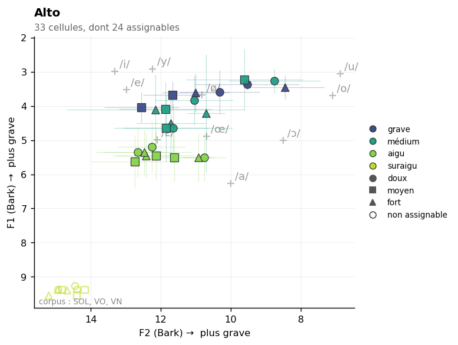
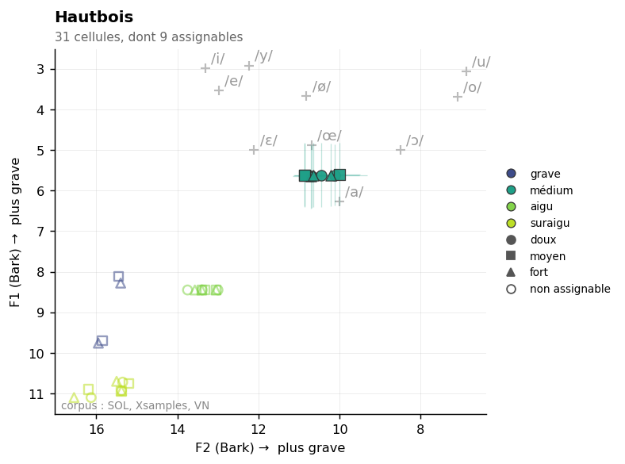

Sommaire › Synthèses


À lire d'abord :
00-METHODE.mdpour la méthode,_REPLICATION.mdpour la distinction entre formants établis et non établis. Ce fichier répond à une question différente de celle des formants, et les deux ne se superposent pas.
Un formant est une propriété du filtre : une résonance du corps, indépendante de la note. Une voyelle, non. Quand on dit qu'un basson sonne /o/, on ne compare pas deux filtres : on constate que son spectre rayonné a son énergie là où /o/ a la sienne. Les voyelles de Calliope sont elles aussi mesurées sur le son, pas sur le conduit vocal.
D'où une méthode qui ne sépare jamais source et filtre — donc applicable à tout instrument, y compris ceux dont la méthode 8 ne peut rien tirer.
Conséquence qu'il faut assumer : la voyelle s'attache à un registre, pas à un instrument. Un piccolo au contre-ut ne sonne pas /o/, et c'est vrai, non un défaut de mesure. L'erreur de l'étude antérieure était d'assigner une voyelle par instrument ; celle de la reprise d'octobre a été de chercher un jeu de formants par instrument. Les deux supposaient qu'un instrument a une couleur unique.
| Champ | Sens |
|---|---|
| F1, F2 | les deux maxima du motif d'excitation auditive, après fusion à 3,5 Bark |
| IQR | dispersion interquartile, en Bark, à l'intérieur de la cellule |
| distance | distance en Bark à la voyelle française la plus proche (Calliope, voix d'homme) |
| Statut | Critère | Lecture |
|---|---|---|
| assignable | distance ≤ 2 Bark | la voyelle est nommable |
| approximative | 2 à 3,5 Bark | voisinage, à ne pas publier comme une voyelle |
| hors espace | > 3,5 Bark — le seuil de Chistovich | l'instrument est en dehors de l'espace vocalique du français |
| Marque | Sens |
|---|---|
| 1 max | un seul maximum survit : il n'y a pas de couple (F1, F2) à lire |
| F1=f0 | F1 coïncide avec la fondamentale : la « voyelle » n'est que la hauteur |
| dispersé | IQR > 2 Bark sur un axe : le registre n'a pas de couleur stable |
Une cellule marquée n'est pas publiable comme une voyelle.
C'est une typologie distincte de celle des formants (classes A, B, C de 00-METHODE.md).
Un instrument peut n'avoir aucun formant et une voyelle très nette, et l'inverse.
| Comportement | Instruments |
|---|---|
| Voyelle unique et stable sur toute la tessiture | basson — seul cas |
| Traverse l'espace en montant, puis en sort par le haut | flûtes, clarinettes, cordes, hautbois |
| Hors espace par le haut | piccolo dès le médium · flûte, clarinettes Mib et Sib, violon et alto au suraigu |
| Hors espace par le bas, ou sans second maximum | contrebasson · les deux tubas · cor et trombones hors de l'aigu · contrebasse au grave |
| Registre | Dyn. | F1 | F2 | IQR | Voyelle | Dist. |
|---|---|---|---|---|---|---|
| grave | moyen | 525 Hz | 1 616 Hz | 0,4 / 1,6 | ɛ | 0,41 |
| grave | fort | 519 Hz | 1 227 Hz | 0,7 / 2,0 | œ | 0,84 |
| bas médium | moyen | 530 Hz | 1 288 Hz | 0,5 / 0,4 | œ | 0,53 |
| bas médium | fort | 529 Hz | 1 182 Hz | 0,6 / 0,8 | œ | 1,10 |
| haut médium | moyen | 547 Hz | 1 232 Hz | 0,8 / 0,4 | œ | 0,86 |
| aigu | moyen | 584 Hz | 1 079 Hz | 1,2 / 1,3 | ɔ | 0,67 |
F1 reste entre 499 et 590 Hz sur les douze cellules, IQR de 0,4 à 1,3 Bark. Le basson tient /œ/–/ɔ/ d'un bout à l'autre de sa tessiture et de sa dynamique.
Vérification ZSamples : F1 de 470 à 590 Hz, voyelles /œ/, /ɔ/, /a/, distances 0,37 à 1,07. Écart inférieur à un demi-Bark sur les douze cellules.
Et le lien avec la méthode 8 est direct : le formant établi du basson est à 554 Hz, répliqué dans les deux corpus. La méthode 12 retrouve donc comme saillance stable du motif auditif ce que la méthode 8 trouvait comme résonance du filtre. C'est le test de calibration de la méthode 12, et il passe.
| Instrument | Registre | F1 | Statut | ZSamples |
|---|---|---|---|---|
| Petite flûte | grave | 708–721 Hz | ɛ · assignable (1,5) | a · 702 Hz (1,10) |
| médium | 1 283 Hz | hors espace (6,0) | hors espace · 1 362 Hz | |
| aigu | 2 378–2 569 Hz | hors espace (10,5) | hors espace · 2 517 Hz | |
| suraigu | 3 959 Hz | hors espace (15,2) | — | |
| Flûte | médium | 645 Hz | ɛ · assignable (1,0) | a · 683 Hz (0,71) |
| aigu | 1 283 Hz | hors espace (5,8) | hors espace · 1 367 Hz | |
| suraigu | 2 094 Hz | hors espace (10,1) | — | |
| Flûte basse | grave | 219 Hz | 1 max | u · 222 Hz (1,00) |
| médium | 434 Hz | ɔ · assignable (1,24) | o · 373 Hz (0,67) | |
| aigu | 692 Hz | a · assignable (0,56) | a · 683 Hz (0,06) | |
| Flûte contrebasse | aigu | 343 Hz | o · assignable (0,63) | œ · 518 Hz (0,52) |
| suraigu | 572 Hz | œ · assignable (0,70) | ɛ · 611 Hz (0,91) |
La frontière tombe autour de 700 Hz de F1, ce qui est exactement le plafond de /a/ chez l'homme (684 Hz, soit 6,4 Bark). Dès que F1 dépasse cette valeur, aucune voyelle française n'est atteignable : il n'y a rien au-dessus. C'est arithmétique, et cela répond à l'anomalie du piccolo autrement que par un défaut de mesure.
Réplication excellente : F1 à moins d'un demi-Bark, et le statut réplique parfaitement — assignable reste assignable, hors espace reste hors espace, avec la frontière au même endroit. Les voyelles nommées glissent parfois d'un cran, /ɛ/ contre /a/, mais ce sont des voisines immédiates.
| Registre | Cl. contrebasse | Cl. basse | Cl. en Sib | Cl. en Mib |
|---|---|---|---|---|
| chalumeau | u · 204 Hz | ø · 216–230 Hz | u · 277 Hz | ø · 282 Hz |
| gorge | y · 200 Hz | ø / e · 263–361 Hz | ø · 362 Hz | ɛ · 563 Hz |
| clarine | ø · 235 Hz | o / ø · 322–330 Hz | a / œ / ɛ · 639–679 Hz | ɛ · 864 Hz |
| suraigu | ø · 306 Hz | a / ɛ · 741 Hz | hors espace · 1 245 Hz | hors espace · 1 723 Hz |
Deux régularités. Chaque clarinette monte de /u/ vers /a/ en gravissant ses registres, puis sort de l'espace par le haut quand elle y arrive. Et plus l'instrument est grave, moins il monte : la contrebasse reste entre /u/, /y/ et /ø/ et n'atteint jamais /a/ ; la Mib part de /ø/ et sort au suraigu. C'est une même trajectoire, décalée selon la taille.
Cela recoupe l'écoute : chalumeau sombre et fermé, clarine ouvert.
Prudence sur le chalumeau : marqué « dispersé » sur les quatre instruments, IQR de F2 de 2,3 à 5,7 Bark. Conséquence directe de la dominance des harmoniques impairs, mesurée par ailleurs : le second maximum y est mal défini. Les voyelles du chalumeau sont indicatives.
Vérification ZSamples : chalumeau /u/ et suraigu hors espace de part et d'autre, frontière
au même endroit. La clarinette basse de ZSamples est inutilisable — ses noms de fichiers
sont transposés de 16 demi-tons (voir _REPLICATION.md).
Hautbois — SOL : grave et médium assignables, puis hors espace à partir de l'aigu (991 Hz, distance 3,57). ZSamples : seul le médium assignable (664 Hz, /a/, 0,62), le grave hors espace à 869 Hz. Le médium concorde, le grave non. Avec le désaccord déjà constaté sur ses formants, le hautbois reste l'anche double la moins fiable.
Cor anglais — ses neuf cellules SOL sont assignables, distances de 0,35 à 1,71, voyelles /ɔ/, /a/, /ɛ/ plausibles. Mais toutes sont marquées « dispersé », IQR de 1,6 à 5,1 Bark. Un IQR de 5 Bark est un cinquième de l'échelle : la médiane n'a plus de sens. ZSamples montre la même dispersion, 1,4 à 4,6 Bark. C'est donc l'instrument, pas l'échantillon : le cor anglais a réellement une couleur instable à l'intérieur d'un registre.
Point notable : sa voyelle médiane, elle, réplique — /ɔ/ au médium et /a/ à l'aigu dans les deux corpus, distances 0,10 à 1,73 — alors que ses formants ne répliquaient pas du tout. Pour cet instrument, la méthode 12 est plus robuste que la méthode 8.
Contrebasson — SOL : « 1 max » sur ses douze cellules, donc pas de voyelle. ZSamples : /u/ à l'aigu, 277 Hz, distances 0,36 et 0,64 — très propres. Les deux corpus ne s'accordent pas sur la présence d'un second maximum. Classé ici en « hors espace par le bas », à analyser autrement (voir les limites).
C'est le résultat principal de cette famille. Sur les 45 cellules publiables des six cuivres, 36 portent la marque « 1 max » : pas de second maximum, donc pas de voyelle. Et la répartition est nette — le second maximum n'apparaît qu'au fort, et seulement chez le cor, la trompette et les trombones à l'aigu. Les deux tubas n'en ont jamais, sur aucune de leurs 24 cellules.
Physiquement cohérent : en nuance douce le spectre d'un cuivre est pauvre en harmoniques et l'énergie forme une seule masse ; en forte, l'enrichissement crée une seconde saillance.
| Instrument · registre | doux | moyen | fort | facteur |
|---|---|---|---|---|
| Trombone ténor · grave | 355 Hz | 531 Hz | 718 Hz | ×2,02 |
| Trompette · médium | 639 Hz | 880 Hz | 1 073 Hz | ×1,68 |
| Tuba basse · grave | 160 Hz | 279 Hz | 406 Hz | ×2,54 |
| Tuba basse · médium | 129 Hz | 214 Hz | 350 Hz | ×2,71 |
| Cor · médium | 287 Hz | 362 Hz | 439 Hz | ×1,53 |
Vérification ZSamples sur le trombone ténor : 359 → 707 Hz au grave, contre 355 → 718 chez SOL. Les deux corpus concordent à moins d'un demi-Bark sur cet effet. C'est le résultat le plus solide des cuivres, et il justifie rétrospectivement la grille registre × dynamique : avec une grille par registre seul, ces valeurs auraient été moyennées en un chiffre sans sens.
Il explique aussi pourquoi le cor à 466 Hz et la trompette à 1 479 Hz étaient « fragiles » en méthode 8 : la bande agrégée sur toutes les dynamiques est nécessairement étalée.
| Instrument | Cellule | Voyelle | Dist. | ZSamples |
|---|---|---|---|---|
| Trombone ténor | aigu doux | ɔ | 0,39 | a · 0,52 |
| Trombone ténor | aigu moyen | ɔ | 0,33 | — |
| Trombone ténor | aigu fort | a | 0,87 | a · 0,07 |
| Cor | grave fort | ɛ | 0,82 | — |
| Cor | aigu fort | ɛ | 0,53 | œ · 0,93 |
| Trompette | aigu doux | a | 1,54 | ɛ · 1,76 |
| Trompette | — | — | — | médium œ · 0,09 |
| Trombone basse | — | — | — | grave ɛ · 0,69 · aigu ɔ · 0,88 |
Le cor est le cuivre le moins stable : SOL donne /ɛ/ et /ɔ/ au fort, ZSamples /œ/ à l'aigu et « 1 max » partout ailleurs. Troisième désaccord pour cet instrument, après ses formants non répliqués et son ρ contradictoire.
| Registre | Contrebasse | Violoncelle | Alto | Violon |
|---|---|---|---|---|
| grave | — (1 max) · 101 Hz | u · 168 Hz | ø · 371 Hz | e / ɛ · 451 Hz |
| médium | — (1 max) · 106 Hz | u · 211 Hz | ø · 399 Hz | ɛ · 525 Hz |
| aigu | ø · 209 Hz | ɔ / œ · 422–462 Hz | ɛ · 554 Hz | ɛ puis hors espace · 664–788 Hz |
| suraigu | œ / ɛ · 480–507 Hz | ɛ · 702–741 Hz | hors espace · 1 042 Hz | hors espace · 1 478 Hz |
C'est la famille la plus régulière. Chaque instrument monte de /u/–/ø/ vers /ɛ/, et le quatuor empilé couvre tout l'espace vocalique sans trou. Aucune autre famille ne le fait.
L'alto est l'instrument le plus franchement assignable après le basson : neuf cellules sur douze, distances de 0,19 à 0,92 Bark.
Vérification ZSamples : F1 réplique à 0,2–0,8 Bark, et la structure de famille tient — contrebasse sur /u/, violoncelle sur /u/–/ø/, alto sur /e/–/œ/, violon sur /œ/–/ɛ/ puis hors espace. Les voyelles glissent d'un cran, /ɛ/ contre /œ/, mais les distances restent sous 1 Bark.
Les cordes sont de classe C : plusieurs résonances de caisse, aucune dominante. Cela explique la forte dispersion de leur F2 — IQR de 3 à 5,4 Bark sur la plupart des cellules, alors que F1 est stable. Le détecteur verrouille tantôt sur une résonance, tantôt sur une autre, selon la note.
Et les formants établis par la méthode 8 disent quels candidats existent. La correspondance est directe :
| Instrument | Formants établis (répliqués) | F2 de la carte vocalique |
|---|---|---|
| Violon | 2 348 Hz — le bridge hill de la littérature acoustique | 2 136 Hz à l'aigu fort |
| Alto | 1 318 · 2 091 Hz | 1 314 Hz à l'aigu · 2 161 Hz au médium fort |
| Violoncelle | 1 108 · 2 216 Hz | 1 079 Hz au médium doux · 2 061 Hz au grave fort |
| Contrebasse | 1 396 Hz | 1 445–1 519 Hz au suraigu |
La dispersion de F2 n'est donc pas du bruit : c'est la signature de la multiplicité des résonances de caisse. Les deux méthodes se rejoignent ici, et la méthode 8 sert à interpréter la méthode 12 plutôt qu'à la concurrencer. Le bridge hill du violon, en particulier, est le seul formant de corde dont la littérature acoustique parle, et il est retrouvé par les deux voies.
À faire : vérifier systématiquement, cellule par cellule, si F2 tombe sur un formant établi, et le signaler dans la sortie. Ce serait un critère de confiance supplémentaire pour les cordes.
Ajouté le 25/10/2026, sur quatre corpus. Voir
_CORPUS-CROISES.mdpour les corpus et la règle de provenance.
Ce sont les deux instruments que quatre corpus indépendants laissent sans aucun formant commun : le hautbois donne 4 183 Hz dans SOL, rien dans ZSamples, 2 635 et 4 974 dans Xsamples, 3 320 dans VN ; l'alto n'a aucune paire stricte. La méthode 8 n'a rien à en dire.
La carte vocalique, elle, réplique sur les quatre.
| Registre | SOL | ZSamples | Xsamples | VN | Statut concordant |
|---|---|---|---|---|---|
| grave | assignable | 869 Hz · hors | 790–980 Hz · 1 max | 768–964 Hz · 1 max/hors | instable |
| médium | assignable | 664 Hz · /a/ (0,62) | 605 Hz · /a/ (0,65) | 605 Hz · /œ/ (0,74) | assignable |
| aigu | 991 Hz · hors (3,57) | 1 022 Hz · hors (3,83) | 991 Hz · hors (3,66) | 991 Hz · hors (3,69) | hors espace |
| suraigu | 1 435–1 478 Hz · hors | 1 580 Hz · hors | 1 440 Hz · hors | 1 393–1 403 Hz · hors | hors espace |
991 Hz à l'aigu dans trois corpus, au Hz près, et la même distance de 3,7 Bark. Le médium donne /a/ ou /œ/ — voisines immédiates — entre 605 et 664 Hz, soit 0,4 Bark d'écart maximum sur trois corpus. Et les quatre s'accordent sur le fait que l'instrument sort de l'espace vocalique dès l'aigu.
C'est exactement le cas du cor anglais, en plus net : la voyelle réplique quand les formants ne répliquent pas.
Mais il faut lire la marque F1=f0. Elle est présente sur toutes les cellules du
médium, de l'aigu et du suraigu : le premier maximum du hautbois coïncide avec sa
fondamentale. Ce que la carte décrit, pour cet instrument, est donc où se trouve sa
tessiture, non une invariance de timbre. C'est cohérent avec son ρ de 0,72 à 0,80 : son
spectre suit la hauteur.
La formulation juste est donc : le hautbois sonne /a/ au médium parce que sa fondamentale y occupe l'aperture de /a/, et non le hautbois a un formant dans la zone /a/. La carte réplique parce que la tessiture réplique. C'est un résultat plus faible que celui du basson, dont le F1 reste à 554 Hz d'un bout à l'autre, mais c'est un résultat, et il est utile en orchestration : il dit dans quel registre l'instrument apporte quelle couleur.
| Registre | SOL | ZSamples | VO | VN |
|---|---|---|---|---|
| grave | 371–381 Hz · /ø/ | 357–393 Hz · /y/–/e/ | n < 5 | 347–421 Hz · /ø/–/o/ |
| médium | 399–474 Hz · /ø/–/ɛ/ | 429–498 Hz · /e/ | 440–490 Hz · /ɛ/–/ø/ | 333–429 Hz · /o/–/ɛ/ |
| aigu | 554–584 Hz · /ɛ/ | 554–557 Hz · /œ/ | 590 Hz · /œ/–/ɛ/ | 539–605 Hz · /ɛ/ |
| suraigu | 1 042–1 147 · hors | 860–1 026 · approx/hors | 829–878 · approx | 1 142 · hors |
L'aigu est le meilleur accord de toute la carte vocalique : quatre corpus entre 539 et 605 Hz, voyelle /ɛ/ ou /œ/, distances de 0,22 à 0,90 Bark. Et les quatre décrivent la même trajectoire — montée de /ø/–/o/ au grave vers /ɛ/ à l'aigu, puis sortie par le haut.
Corrigé le 27/10/2026, tâche C1. Ce paragraphe affirmait « au grave et au médium … entre 347 et 498 Hz sur trois corpus ». Le test note par note (
resonance_caisse.py) a tranché : la moitié médium est fausse. Au médium, les quatre corpus donnent des pentes de log2(F1) contre log2(f0) de +0,79, +0,85, +1,04 et +1,11 — F1 y suit la note, c'est l'harmonique le plus fort et non une résonance. Le grave, lui, sort renforcé. Voir_RESONANCE-DE-CAISSE.md.
Au grave seulement, l'alto n'est pas marqué F1=f0 : aucune cellule ne l'est, dans
aucun des quatre corpus. Et son premier maximum se tient entre 374 et 395 Hz sur quatre
corpus — 0,9 demi-ton d'écart, l'accord inter-corpus le plus serré de toute l'étude — avec
une pente médiane de +0,01 sur sept demi-tons de fondamentale : F1 ne bouge pas pendant que
la note se déplace.
C'est la région de la résonance principale de caisse de l'alto, que la littérature acoustique situe vers 350–400 Hz. Autrement dit, la méthode 12 retrouve une résonance réelle que la méthode 8 a entièrement manquée — celle-ci donnait 1 318 Hz comme formant le plus grave de l'alto, valeur qui s'est révélée fausse de dix demi-tons sur ZSamples.
L'explication tient à une limite connue de la méthode 8, écrite dans residu_local() : le
redressement local à ±3/4 d'octave ne mesure rien en dessous de 3,2 à 5,7 fois la fondamentale
la plus grave du corpus — pour l'alto, entre 523 et 659 Hz selon le corpus, donc bien au-dessus
de 384 Hz. La résonance n'est pas redressée : elle est hors du domaine calculé. (Corrigé le
27/10/2026, tâche C2 : l'explication par la largeur, donnée ici le 24/10, visait la mauvaise
limite. Voir _FENETRE-DE-REDRESSEMENT.md.)
La zone de caisse d'un alto est large et plate ; elle est donc redressée avec le reste et
disparaît. La méthode 12, qui ne redresse rien et lit la saillance du motif auditif, la voit.
C'est le premier cas où les deux méthodes ne sont pas seulement complémentaires mais hiérarchisées : sur l'alto, la méthode 12 est la bonne et la méthode 8 se trompe.
| Instrument | Ce qu'on peut affirmer |
|---|---|
| Hautbois | Aucun formant fixe mesurable sur quatre corpus ; classe B. Sa couleur vocalique suit son registre : /a/–/œ/ au médium, hors de l'espace vocalique du français dès l'aigu (991 Hz dans trois corpus). Décrire par registre, jamais par un chiffre unique. |
| Alto | Aucun formant établi par la méthode 8, mais F1 entre 374 et 395 Hz au grave sur quatre corpus, pente +0,01 — résonance fixe compatible avec le mode B1+ de la caisse. Au médium, F1 suit la note (pentes +0,79 à +1,11) : ne rien en conclure. Trajectoire /ø/–/o/ → /ɛ/ à l'aigu (quatre corpus, 0,22–0,90 Bark) → hors espace au suraigu. |
Réserve commune : la dispersion de F2 reste forte sur l'alto (IQR de 2 à 5 Bark, marque
dispersé sur neuf cellules sur douze dans VN), ce qui est la signature de la classe C déjà
discutée. Son aperture est bien définie, son timbre antéro-postérieur flotte.
1. La présence d'un second maximum dépend du corpus, pas seulement de l'instrument. Le contrebasson n'en a aucun chez SOL et deux chez ZSamples ; la contrebasse de même au grave et au médium. C'est une différence de prise de son — plus de contenu aigu dans un cas. Le critère « 1 max » n'est donc pas une propriété de l'instrument. Les classements en « hors espace par le bas » sont conservés pour mémoire mais devront être repris par une autre voie.
2. ~~Le violon est instable au suraigu dans les deux corpus.~~ — CORRIGÉ le 27/10/2026, tâche C3. Le défaut était réel : SOL donnait F1 = 496 Hz au doux et 1 478 Hz au moyen, ZSamples 977 Hz avec un IQR de 8,6 Bark. Le diagnostic — un basculement du détecteur entre fondamentale et résonance de caisse — était juste, et il a livré la règle : un spectre harmonique n'ayant aucun partiel sous f0, un maximum situé là n'est jamais un formant. F1 est désormais cherché parmi les maxima situés à f0 ou au-dessus, à un demi-ton près.
Un tiers des notes du suraigu du violon avaient un « F1 » sous leur propre fondamentale (et
jusqu'à 57 % au violoncelle chez ZSamples). Après correction, les trois dynamiques du suraigu du
violon s'accordent (1 610–1 665 Hz) et l'IQR tombe de 7,4 à 2,3 Bark chez SOL, de 9,0 à 3,4 chez
ZSamples. Rien ne bouge au grave ni au médium : les résonances de caisse établies en C1 sont
intactes au Hz près. Voir _SURAIGU.md.
3. Les grilles comparées ne sont pas toujours les mêmes. ZSamples bascule souvent en repli registre seul, ses corpus par instrument étant plus petits. Pour les instruments où la dynamique déplace F1 d'une octave — les cuivres — la comparaison entre corpus est donc nécessairement grossière.
4. La pente spectrale n'est pas comparable entre corpus (voir _REPLICATION.md). Elle ne
figure pas ici pour cette raison.
5. Les voyelles de référence sont celles de la voix d'homme (Calliope, Tubach 1989). Le CSV
Formants-Francais/donnees/formants_calliope.csv contient aussi la voix de femme et une
estimation enfant. Un instrument classé /ɔ/ en référence masculine pourrait se classer
autrement en référence féminine : à examiner, car cela change la lecture pédagogique.
Les travaux restants sont tous dans
_PLAN-DE-REPRISE.md, qui est la seule liste à tenir. Ne pas en ouvrir une ici : c'est ainsi que huit listes se sont contredites entre le 23 et le 26 octobre.
carte-vocalique-SOL-2026-10-24.json — les 22 instruments, SOL2020 + Yan_Adds.../../Scripts/v7-formants-2026/carte_vocalique.py.
Relance : python3 carte_vocalique.py <dossier de spectres> ../../Data/registres.md
[--motif={nom}.spectres.txt] [--seulement=…] [--sortie=…]